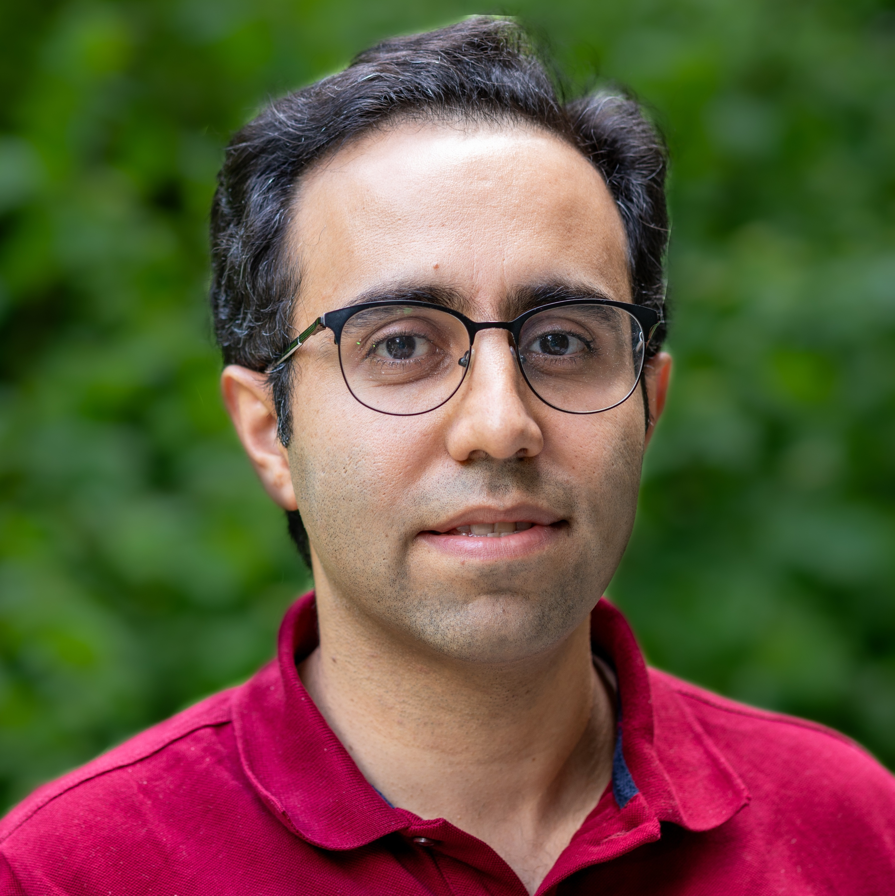

POSTDOCTORAL RESEARCHER · MAX PLANCK INSTITUTE
Making the
digital world
feel real.
I'm Easa AliAbbasi. I explore how we perceive touch — and how haptics, human-computer interaction, and AI can create richer human experiences.
FEEL
01 / PERCEPTION
02 / INTERACTION
03 / INTELLIGENCE
THE SCIENCE OF TOUCH — REIMAGINED
WHAT I'M WORKING ON
All projects ↗Selected research.

FEATURED RESEARCH / 01
Scene2Hap: Generating Scene-Wide Haptics for VR from Scene Context with Multimodal LLMs
Explore project ↗
FEATURED RESEARCH / 02
Haptic Redirection
Explore project ↗
FEATURED RESEARCH / 03
Physical Compliance and the Compliance Illusion: The Importance of Action for Perception
Explore project ↗ABOUT ME
Curious about how touch shapes our world.
I'm a postdoctoral researcher in the Sensorimotor Interaction Group at the Max Planck Institute for Informatics. My work spans tactile perception, haptic interfaces, and AI-driven interaction.
Learn about my research ↗
EASA ALIABBASI / RESEARCHERLATEST MOMENTS
News & updates.
August 2026
I will serve as the program co-chair of the Augmented Humans Conference 2027.
July 2026
Our paper was published in the Advanced Functional Materials Journal (IF=19.9)! Check it out here
April 2026
Our paper, Scene2Hap, received the Best Paper Award at CHI 2026 (1% of all submissions)!
December 2025
Our workshop "Haptics for AI and AI for Haptics: Challenges and Opportunities" got accepted to CHI26. Come join us in Barcelona!